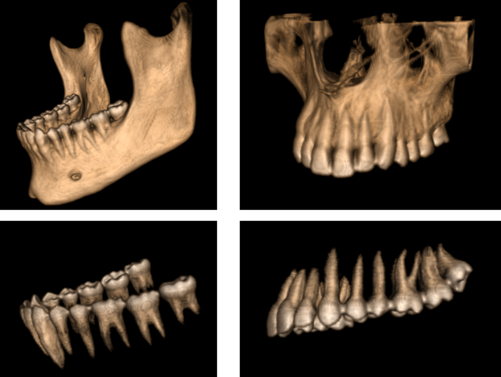
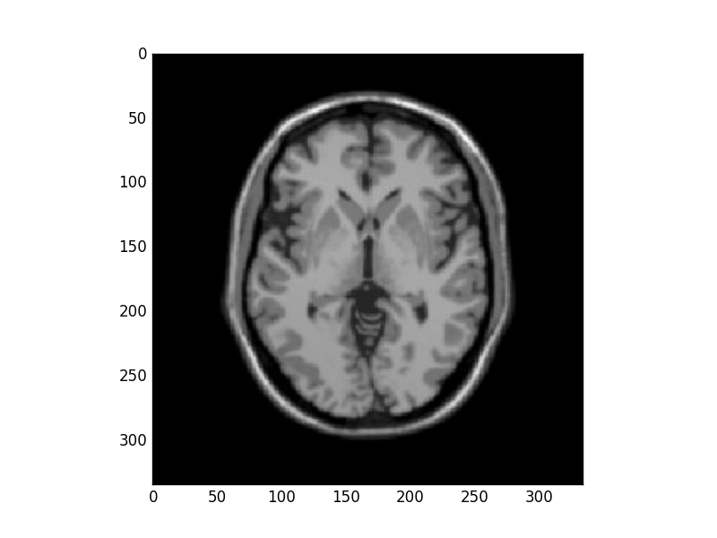
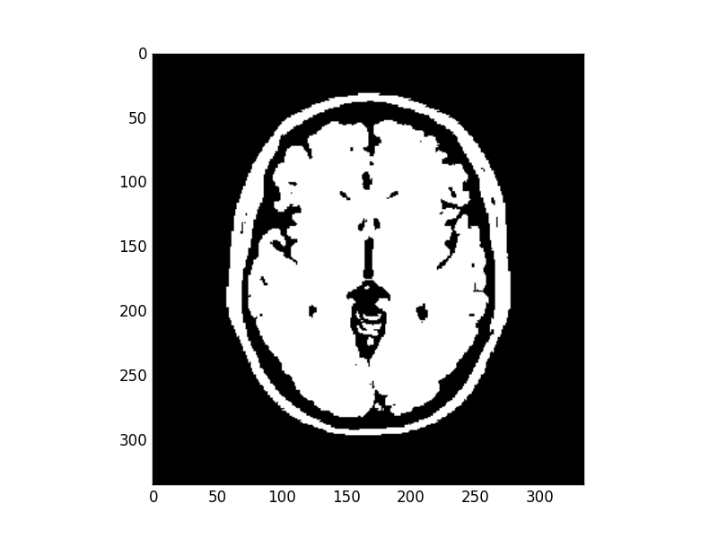

Week 7: Segmentation (Thresholding and Region growing)
- Image Segmentation
- Histogram Based Segmentation (Image Binarization)
- Optimal Threshold
- Otsu Thresholding
- Seed Pixels (Region Growing)
Image Segmentation
Image segmentation is the process of partitioning the image into isolated areas or segment. Each segment has similar features, for example have same intensity or same color etc, and is considered as an object in the image. There are many applications of image segmentation of medical images including automatic diagnostic applications and other application related to treatment. Treatment planning is an example of 3D image segmentation.
3D Segmentation
3D object is reconstructed from series of medical images. Here an example of reconstruction of 3D human skull from a series of dicom images scanned by CT scanner.

From that skull we can segment different interested regions or object. Here we are interested in segmentation of mandible, maxilla, upper and lower teeth. Each object now is separated and we can treat with it independently. Using these object dentists can plane process of dental implant or orthodontic treatment or any similar operation.

This was a project I worked on for a subject in my pre-master year under title “An optimized technique for 3D segmentation for orthodontic treatment plane”. I used VTK for reconstruction and segmentation processes and Qt for GUI design. Segmentation was based on thresholding and connectivity testing which is similar to region growing approach but in 3D.
Histogram Based Segmentation (Image Binarization)
Histogram based segmentation or image binarization segment the image into two classes, object and background based on a certain threshold. Image will be a binary image according to following equation
The question here is How to select threshold ?
Optimal Threshold
Assume we have the following histogram. For ideal case object and background would be totally isolated, optimal threshold is well defined here.

Here an example of real image with isolated object, background histograms.

For general case histogram of object and background are merged together, we had to define performance measure of selected threshold.
Otsu Thresholding
Basic Idea
Otsu thresholding aims to automatically find optimal threshold for image binarization. It assumes two classes object and background. The idea is to select the threshold that will minimize within class variance or maximize between class variance. That’s means that we need to calculate these values for all gray levels and select one that has minimum within class variance and maximum between class variance.
But what that mean ? It means that optimal threshold is that one who divide histogram into two parts given that distribution of values at same partition has minimum variance (Values are close to each other) or distributions of different partitions are isolated (far from each other).

Maximizing between class variance
Within class variance
Within class variance can be calculated at specific threshold value as follow
Where is the cumulative sum at that threshold , is the variance of first class and is the variance of second class. We can conclude that is a weighted sum of variances of both classes.
Between class variance
For between class variance it is calculated for specific value of threshold as follow
where and is the mean of class 1 and 2 respectively.
Mean and variance calculation
Recall that mean or expected of variable with probability density function is defined as
and variance
How to get pdf of both classes ?
Given the relative histogram that represent the pdf of all the image. We can determine the pdf of class 1 with gray levels < threshold t by dividing the relative histogram by the total probabilities till that threshold t which is cumulative probability at that threshold CDF(t). For second class we can get its pdf by dividing by (1 - CDF(t)).
Basic Algorithm
Basic algorithm for determining threshold that maximize between class variance is
Get Histogram of the image
Get relative histogram (PDF)
Get cumulative Histogram (CDF)
initialize OptThreshold = 1 and maxVariance = 0
For each t in range 1 to 255
m1 = mean value class 1
m2 = mean value class 2
c1 = CDF[t]
varBet = c1 * (1-c1) * (m1 - m2)**2
if value > maxVariance
maxVariance = value
OptThreshold = t
Lets try to implement it
Import some libraries
import numpy as np
import matplotlib.pyplot as plt
from matplotlib import colors
Defining otsu function that returns the optimal threshold of input image.
def otsuThresholdB(image):
#Get size of image
rows, cols = image.shape
#Plotting image histogram
plt.figure()
#We are interested on H (histogram), other values that plt.hist returns will be ignored here
H, binEdges, patches = plt.hist(image.ravel(),256)
# Getting relative histogram (pdf)
pdf = H /(rows*cols)
# Get cdf for all gray levels
cdf = np.cumsum(pdf)
#Initialization
othresh = 1
maxVarB = 0
Calculation of between class variance of all gray levels and extract threshold with max variance
for t in range(1,255):
#gray levels belongs to background
bg = np.arange(0,t)
#object gray levels
obj = np.arange(t, 256)
#Calculation of mean gray level for object and background
mBg = sum(bg*pdf[0:t])/cdf[t]
mObj = sum(obj*pdf[t:256])/(1-cdf[t])
# Calculate between class variance
varB = cdf[t] * (1-cdf[t]) *(mObj - mBg)**2
#Pick up max variance and corresponding threshold
if varB > maxVarB:
maxVarB= varB
othresh = t
return othresh
We didn’t finished yet. we will use that threshold to binarize the image so lets define that function
def binarize( gray_image , threshold ):
return 1 * ( gray_image > threshold )
Here is the main function
#Read an image
image = plt.imread('images/MRIbrain3.jpg')
#Extract value channel (intensity)
hsvImage = colors.rgb_to_hsv(image)
myIm = hsvImage[...,2]
#Show original image
plt.figure()
plt.imshow(myIm)
plt.set_cmap("gray")
#Get optimal threshold
oTb = otsuThresholdB(myIm)
#Binarize the image and show it
binaryIm = binarize(myIm, oTw)
plt.figure()
plt.imshow(binaryIm)
plt.show()
Results
Original Image

Histogram of the image

The binary image optimal threshold value was 66

What about minimizing within class variance ?
Seed Pixels (Region Growing)
Segmentation starts with initial seed point. Neighbors of that pixel will be merged if they similar to it. Similarity criteria may be defined as intensity or color. Process continues till no more similar neighbors found. For example next figure shows segmented regions for different seed points.